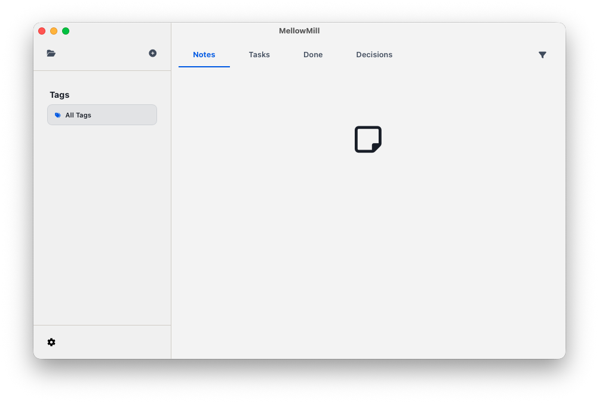

Choose a workspace folder
When MellowMill opens, it starts with a default workspace. In MellowMill, a folder is a workspace: it holds the notes, tasks, projects, and reference material that belong together.
Local-first by design. MellowMill stores your notes and files locally. Back up the workspace using the file workflow you already trust.
-
Open MellowMill
Launch the app after installation. MellowMill opens with a default workspace.
-
Switch to another workspace
Click the folder icon in the top left to open the workspace dialog. Choose Open another folder, then select any folder on your machine. The folder you select becomes your workspace.
By default the name of the workspace is the name of the folder you create. Picking a sensible name for the folder makes it easier in the future to manage your workspace.
Set a boundary that fits
A workspace can be broad enough for a whole business or focused on yourself. Start with the boundary that makes it easiest to find the information you need.
| Workspace scope | Useful for |
|---|---|
| One person | Manage your work, decisions, tasks, and supporting files. |
| A client or business | Ongoing notes, reference material, and related projects. |
| A whole business | Ideas, planning, and the projects you are working on for your business. |
Know where your files live
Your notes and files remain on your machine in the workspace folder. Because a folder is a workspace, you can back up or move it using the file workflow you already trust.
Keep related material nearby, but do not make the first workspace responsible for everything. You can open another folder later when a different boundary makes more sense.
Finding your way around
Hover over a highlighted control, or focus it with the keyboard, to see a quick explanation. On a touch screen, tap a highlight. The full list is below for reference.

- Folder
- Switch to another workspace by choosing a folder on your machine.
- Add
- Start creating a new item in the workspace.
- Notes
- Browse the notes in this workspace.
- Tasks
- See the tasks captured in your notes.
- Done
- Review tasks you have completed.
- Decisions
- Find decisions recorded in your notes.
- Filter
- Narrow the current view to the items you need.
- All Tags
- Choose a tag to narrow the items shown.
- Settings
- Open MellowMill settings.